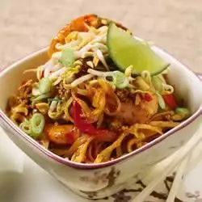

Home
Pad Thai

Perfect Thai recipe for beginners
Once mastered, you'll forget stopping for take-out and make this easy stir-fry a weeknight staple.
Ingredients (makes 1 dish)
- 8 ounces medium width rice vermicelli noodles
- 3 tablespoons vegetable oil
- ¼ pound ground chicken
- 1 teaspoon hot pepper sauce
- 1 red pepper, thinly sliced
- ½ pound peeled, deveined raw shrimp
- 3 cloves garlic, minced
- 2 teaspoons freshly grated gingerroot
- ½ cup vegetable or chicken broth
- ½ cup Heinz Tomato Ketchup
- ¼ cup lime juice
- 3 tablespoons granulated sugar
- 3 tablespoons fish sauce
- 1 ½ cups bean sprouts
- 3 green onions, thinly sliced
- ¼ cup fresh coriander or parsley leaves
- chopped peanuts
Steps
- Cover noodles with boiling water and let stand for 5 minutes; drain well and reserve.
- Heat half the oil in a wok or deep skillet set over high heat. Crumble in chicken and add hot sauce; stir-fry for 3 to 5 minutes or until browned. Reserve on a platter.
- Add remaining oil and peppers to pan; stir-fry for 3 minutes. Add shrimp and stir-fry for 2 minutes. Stir in garlic, ginger, broth, ketchup, lime juice, sugar and fish sauce. Bring to a boil. Add noodles and reserved meat; toss mixture to combine. Heat through.
- Add sprouts and toss gently. Sprinkle with onions, coriander and peanuts.